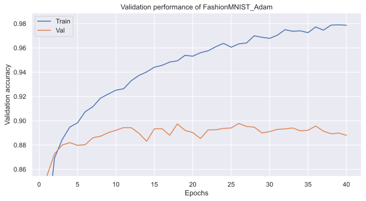
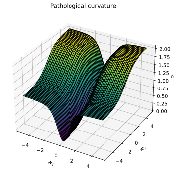

Initialization: review different techniques, go from simple to complex ones
constant/Gaussian
Xavier/Kaiming
Optimization:
Stochastic Gradient Descent (SGD)
SGD with Momentum
Adam
Imports
## Standard librariesimport osimport jsonimport mathimport numpy as np import copy## Imports for plottingimport matplotlib.pyplot as pltfrom matplotlib import cm%matplotlib inline from IPython.display import set_matplotlib_formatsset_matplotlib_formats('svg', 'pdf') # For exportimport seaborn as snssns.set()## Progress barfrom tqdm.notebook import tqdm## PyTorchimport torchimport torch.nn as nnimport torch.nn.functional as Fimport torch.utils.data as dataimport torch.optim as optim
Preparation
# Path to the folder where the datasets are/should be downloaded (e.g. MNIST)DATASET_PATH ="../data"# Path to the folder where the pretrained models are savedCHECKPOINT_PATH ="../saved_models/tutorial4"# Function for setting the seeddef set_seed(seed): np.random.seed(seed) torch.manual_seed(seed)if torch.mps.is_available(): torch.mps.manual_seed(seed)#torch.cuda.manual_seed_all(seed)set_seed(42)# Ensure that all operations are deterministic on GPU (if used) for reproducibilitytorch.backends.mps.deterministic =Truetorch.backends.mps.benchmark =False# Fetching the device that will be used throughout this notebookdevice = torch.device("cpu") ifnot torch.mps.is_available() else torch.device("mps:0")print("Using device", device)
Using device mps:0
Download
import urllib.requestfrom urllib.error import HTTPError# Github URL where saved models are stored for this tutorialbase_url ="https://raw.githubusercontent.com/phlippe/saved_models/main/tutorial4/"# Files to downloadpretrained_files = ["FashionMNIST_SGD.config", "FashionMNIST_SGD_results.json", "FashionMNIST_SGD.tar", "FashionMNIST_SGDMom.config", "FashionMNIST_SGDMom_results.json", "FashionMNIST_SGDMom.tar", "FashionMNIST_Adam.config", "FashionMNIST_Adam_results.json", "FashionMNIST_Adam.tar" ]# Create checkpoint path if it doesn't exist yetos.makedirs(CHECKPOINT_PATH, exist_ok=True)# For each file, check whether it already exists. If not, try downloading it.for file_name in pretrained_files: file_path = os.path.join(CHECKPOINT_PATH, file_name)ifnot os.path.isfile(file_path): file_url = base_url + file_nameprint(f"Downloading {file_url}...")try: urllib.request.urlretrieve(file_url, file_path)except HTTPError as e:print("Something went wrong. Please try to download the file from the GDrive folder, or contact the author with the full output including the following error:\n", e)
Preparation
Preload FashionMNIST
from torchvision.datasets import FashionMNISTfrom torchvision import transforms# Transformations applied on each image => first make them a tensor, then normalize them with mean 0 and std 1transform = transforms.Compose([transforms.ToTensor(), transforms.Normalize((0.2861,), (0.3530,)) ])# Loading the training dataset. We need to split it into a training and validation parttrain_dataset = FashionMNIST(root=DATASET_PATH, train=True, transform=transform, download=True)train_set, val_set = torch.utils.data.random_split(train_dataset, [50000, 10000])# Loading the test settest_set = FashionMNIST(root=DATASET_PATH, train=False, transform=transform, download=True)# We define a set of data loaders that we can use for various purposes later.# Note that for actually training a model, we will use different data loaders# with a lower batch size.train_loader = data.DataLoader(train_set, batch_size=1024, shuffle=True, drop_last=False)val_loader = data.DataLoader(val_set, batch_size=1024, shuffle=False, drop_last=False)test_loader = data.DataLoader(test_set, batch_size=1024, shuffle=False, drop_last=False)
Transformation
Note
We have changed the parameters of the normalization transformation transforms.Normalize:
the normalization is now designed to give us an expected mean of 0 and a standard deviation of 1 across pixels
We can calculate the normalization parameters by determining the mean and standard deviation on the original images:
Mean: 0.020
Standard deviation: 1.011
Maximum: 2.022
Minimum: -0.810
Note
Note that the maximum and minimum are not 1 and -1 anymore, but shifted towards the positive values. This is because FashionMNIST contains a lot of black pixels, similar to MNIST.
Linear network
class BaseNetwork(nn.Module):def__init__(self, act_fn, input_size=784, num_classes=10, hidden_sizes=[512, 256, 256, 128]):""" Inputs: act_fn - Object of the activation function that should be used as non-linearity in the network. input_size - Size of the input images in pixels num_classes - Number of classes we want to predict hidden_sizes - A list of integers specifying the hidden layer sizes in the NN """super().__init__()# Create the network based on the specified hidden sizes layers = [] layer_sizes = [input_size] + hidden_sizesfor layer_index inrange(1, len(layer_sizes)): layers += [nn.Linear(layer_sizes[layer_index-1], layer_sizes[layer_index]), act_fn] layers += [nn.Linear(layer_sizes[-1], num_classes)]self.layers = nn.ModuleList(layers) # A module list registers a list of modules as submodules (e.g. for parameters)self.config = {"act_fn": act_fn.__class__.__name__, "input_size": input_size, "num_classes": num_classes, "hidden_sizes": hidden_sizes} def forward(self, x): x = x.view(x.size(0), -1)for l inself.layers: x = l(x)return x
Activation
class Identity(nn.Module):def forward(self, x):return xact_fn_by_name = {"tanh": nn.Tanh,"relu": nn.ReLU,"identity": Identity}
def visualize_gradients(model, color="C0", print_variance=False):""" Inputs: net - Object of class BaseNetwork color - Color in which we want to visualize the histogram (for easier separation of activation functions) """ model.eval() small_loader = data.DataLoader(train_set, batch_size=1024, shuffle=False) imgs, labels =next(iter(small_loader)) imgs, labels = imgs.to(device), labels.to(device)# Pass one batch through the network, and calculate the gradients for the weights model.zero_grad() preds = model(imgs) loss = F.cross_entropy(preds, labels) # Same as nn.CrossEntropyLoss, but as a function instead of module loss.backward()# We limit our visualization to the weight parameters and exclude the bias to reduce the number of plots grads = {name: params.grad.view(-1).cpu().clone().numpy() for name, params in model.named_parameters() if"weight"in name} model.zero_grad()## Plotting fig = plot_dists(grads, color=color, xlabel="Grad magnitude") fig.suptitle("Gradient distribution", fontsize=14, y=1.05) plt.show() plt.close() if print_variance:for key insorted(grads.keys()):print(f"{key} - Variance: {np.var(grads[key])}")
def visualize_activations(model, color="C0", print_variance=False): model.eval() small_loader = data.DataLoader(train_set, batch_size=1024, shuffle=False) imgs, labels =next(iter(small_loader)) imgs, labels = imgs.to(device), labels.to(device)# Pass one batch through the network, and calculate the gradients for the weights feats = imgs.view(imgs.shape[0], -1) activations = {}with torch.no_grad():for layer_index, layer inenumerate(model.layers): feats = layer(feats)ifisinstance(layer, nn.Linear): activations[f"Layer {layer_index}"] = feats.view(-1).detach().cpu().numpy()## Plotting fig = plot_dists(activations, color=color, stat="density", xlabel="Activation vals") fig.suptitle("Activation distribution", fontsize=14, y=1.05) plt.show() plt.close() if print_variance:for key insorted(activations.keys()):print(f"{key} - Variance: {np.var(activations[key])}")
Initialization
Properties
The variance of the input should be propagated through the model to the last layer, so that we have a similar standard deviation for the output neurons.
If the variance would vanish the deeper we go in our model, it becomes much harder to optimize the model as the input to the next layer is basically a single constant value.
Similarly, if the variance increases, it is likely to explode (i.e. head to infinity) the deeper we design our model.
Gradient distribution should have equal variance across layers. If the first layer receives much smaller gradients than the last layer, choosing an appropriate learning rate will be difficult.
Initialization
Important
Initializations depend on the specific activation function used in the network.
model = BaseNetwork(act_fn=Identity()).to(device)
Initialization
Constant initialization
def const_init(model, c=0.0):for name, param in model.named_parameters(): param.data.fill_(c)const_init(model, c=0.005)visualize_gradients(model)visualize_activations(model, print_variance=True)
only the first and the last layer have diverse gradient distributions
the other three layers have the same gradient for all weights (note that this value is unequal 0, but often very close to it).
Important
having the same gradient for parameters that have been initialized with the same values means that we will always have the same value for those parameters.
this would make our layer useless and effectively reduce number of parameters to 1.
Initialization
Constant variance
def var_init(model, std=0.01):for name, param in model.named_parameters(): param.data.normal_(std=std)var_init(model, std=0.01)visualize_activations(model, print_variance=True)
The variance of the activations should stay the same across every layer
Procedure
Suppose we want to design an initialization for the following layer: \[
y=Wx+b, \; y\in\mathbb{R}^{d_y}, \; x\in\mathbb{R}^{d_x}
\] Goal: \[
\text{Var}(y_i)=\text{Var}(x_i)=\sigma_x^{2},\\
mean(y_i) = 0
\]
Initialization
Procedure
We assume \(x\) to also have a mean of zero, because, in deep neural networks, \(y\) would be the input of another layer. This requires the bias and weight to have an expectation of 0. Actually, as \(b\) is a single element per output neuron and is constant across different inputs, we set it to 0 overall.
Next, we need to calculate the variance with which we need to initialize the weight parameters. Along the calculation, we will need the following variance rule: given two independent variables, the variance of their product is \[
\text{Var}(X\cdot Y) = \mathbb{E}(Y)^2\text{Var}(X) + \mathbb{E}(X)^2\text{Var}(Y) + \text{Var}(X)\text{Var}(Y) = \\
= \mathbb{E}(Y^2)\mathbb{E}(X^2)-\mathbb{E}(Y)^2\mathbb{E}(X)^2
\]
(\(X\) and \(Y\) are not refering to \(x\) and \(y\), but any random variable).
Initialization
Computation
\[
\begin{split}
&y_i = \sum_{j} w_{ij}x_{j}\hspace{10mm}\text{Calculation of a single output neuron without bias}\\
&\text{Var}(y_i) = \sigma_x^{2} \\
&= \text{Var}\left(\sum_{j} w_{ij}x_{j}\right)\\
& = \sum_{j} \text{Var}(w_{ij}x_{j}) \hspace{10mm}\text{Inputs and weights are independent of each other}\\
& = \sum_{j} \text{Var}(w_{ij})\cdot\text{Var}(x_{j}) \hspace{10mm}\text{Variance rule (see above) with expectations being zero}\\
& = d_x \cdot \text{Var}(w_{ij})\cdot\text{Var}(x_{j}) \hspace{10mm}\text{Variance equal for all $d_x$ elements}\\
& = \sigma_x^{2} \cdot d_x \cdot \text{Var}(w_{ij})\\
&\Rightarrow \text{Var}(w_{ij}) = \sigma_{W}^2 = \frac{1}{d_x}
\end{split}
\]
Initialization
Thus, we should initialize the weight distribution with a variance of the inverse of the input dimension \(d_x\).
def equal_var_init(model):for name, param in model.named_parameters():if name.endswith(".bias"): param.data.fill_(0)else: param.data.normal_(std=1.0/math.sqrt(param.shape[1]))equal_var_init(model)visualize_weight_distribution(model)visualize_activations(model, print_variance=True)
Our initialization does not restrict us to a normal distribution, but allows any other distribution with:
a mean of 0
and variance of \(1/d_x\).
You often see that a uniform distribution is used for initialization. A small benefit of using a uniform instead of a normal distribution is that we can exclude the chance of initializing very large or small weights.
Initialization
Stabilization of gradient variance: Xavier initialization
Ensures a stable optimization for deep networks. It turns out that we can do the same calculation as above starting from \(\Delta x=W\Delta y\), and come to the conclusion that we should initialize our layers with \(1/d_y\) where \(d_y\) is the number of output neurons. As a compromise between both constraints, Glorot and Bengio (2010) proposed to use the harmonic mean of both values. This leads us to the well-known Xavier initialization:
Xavier initialization balances the variance of gradients and activations
that the significantly higher variance for the output layer is due to the large difference of input and output dimension (\(128\) vs \(10\))
Initialization
Non-linearity
In a \(\tanh\)-based network, a common assumption is that for small values during the initial steps in training, the \(\tanh\) works as a linear function such that we don’t have to adjust our calculation. We can check if that is the case for us as well:
model = BaseNetwork(act_fn=nn.Tanh()).to(device)xavier_init(model)visualize_gradients(model, print_variance=True)visualize_activations(model, print_variance=True)
Although the variance decreases over depth, it is apparent that the activation distribution becomes more focused on the low values.
Therefore, our variance will stabilize around 0.25 if we would go even deeper.
Hence, we can conclude that the Xavier initialization works well for Tanh networks.
Initialization
ReLU
The ReLU activation function sets (in expectation) half of the inputs to 0 so that also the expectation of the input is not zero. However, as long as the expectation of \(W\) is zero and \(b=0\), the expectation of the output is zero.
The part where the calculation of the ReLU initialization differs from the identity is when determining \(\text{Var}(w_{ij}x_{j})\):
If we assume now that \(x\) is the output of a ReLU activation (from a previous layer, \(x=max(0,\tilde{y})\)), we can calculate the expectation as follows:
\[
\begin{split}
\mathbb{E}[x^2] & =\mathbb{E}[\max(0,\tilde{y})^2]\\
& =\frac{1}{2}\mathbb{E}[{\tilde{y}}^2]\hspace{2cm}\tilde{y}\text{ is zero-centered and symmetric}\\
& =\frac{1}{2}\text{Var}(\tilde{y})
\end{split}
\]
Thus, we see that we have an additional factor of 1/2 in the equation, so that our desired weight variance becomes \(2/d_x\).
Initialization
Note
The Kaiming initialization does not use the harmonic mean between input and output size. In the original paper authors argue that using \(d_x\) or \(d_y\) both lead to stable gradients throughout the network, and only depend on the overall input and output size of the network. Hence, we can use here only the input \(d_x\):
def kaiming_init(model):for name, param in model.named_parameters():if name.endswith(".bias"): param.data.fill_(0)elif name.startswith("layers.0"): # The first layer does not have ReLU applied on its input param.data.normal_(0, 1/math.sqrt(param.shape[1]))else: param.data.normal_(0, math.sqrt(2)/math.sqrt(param.shape[1]))model = BaseNetwork(act_fn=nn.ReLU()).to(device)kaiming_init(model)visualize_gradients(model, print_variance=True)visualize_activations(model, print_variance=True)
Note that for Leaky-ReLU etc., we have to slightly adjust the factor of \(2\) in the variance as half of the values are not set to zero anymore.
PyTorch provides a function to calculate this factor for many activation function, see torch.nn.init.calculate_gain (link).
Initialization
Optimization
Preparation
def _get_config_file(model_path, model_name):return os.path.join(model_path, model_name +".config")def _get_model_file(model_path, model_name):return os.path.join(model_path, model_name +".tar")def _get_result_file(model_path, model_name):return os.path.join(model_path, model_name +"_results.json")def load_model(model_path, model_name, net=None): config_file, model_file = _get_config_file(model_path, model_name), _get_model_file(model_path, model_name)assert os.path.isfile(config_file), f"Could not find the config file \"{config_file}\". Are you sure this is the correct path and you have your model config stored here?"assert os.path.isfile(model_file), f"Could not find the model file \"{model_file}\". Are you sure this is the correct path and you have your model stored here?"withopen(config_file, "r") as f: config_dict = json.load(f)if net isNone: act_fn_name = config_dict["act_fn"].pop("name").lower()assert act_fn_name in act_fn_by_name, f"Unknown activation function \"{act_fn_name}\". Please add it to the \"act_fn_by_name\" dict." act_fn = act_fn_by_name[act_fn_name]() net = BaseNetwork(act_fn=act_fn, **config_dict) net.load_state_dict(torch.load(model_file))return netdef save_model(model, model_path, model_name): config_dict = model.config os.makedirs(model_path, exist_ok=True) config_file, model_file = _get_config_file(model_path, model_name), _get_model_file(model_path, model_name)withopen(config_file, "w") as f: json.dump(config_dict, f) torch.save(model.state_dict(), model_file)def train_model(net, model_name, optim_func, max_epochs=50, batch_size=256, overwrite=False):""" Train a model on the training set of FashionMNIST Inputs: net - Object of BaseNetwork model_name - (str) Name of the model, used for creating the checkpoint names max_epochs - Number of epochs we want to (maximally) train for patience - If the performance on the validation set has not improved for #patience epochs, we stop training early batch_size - Size of batches used in training overwrite - Determines how to handle the case when there already exists a checkpoint. If True, it will be overwritten. Otherwise, we skip training. """ file_exists = os.path.isfile(_get_model_file(CHECKPOINT_PATH, model_name))if file_exists andnot overwrite:print(f"Model file of \"{model_name}\" already exists. Skipping training...")withopen(_get_result_file(CHECKPOINT_PATH, model_name), "r") as f: results = json.load(f)else:if file_exists:print("Model file exists, but will be overwritten...")# Defining optimizer, loss and data loader optimizer = optim_func(net.parameters()) loss_module = nn.CrossEntropyLoss() train_loader_local = data.DataLoader(train_set, batch_size=batch_size, shuffle=True, drop_last=True, pin_memory=True) results =None val_scores = [] train_losses, train_scores = [], [] best_val_epoch =-1for epoch inrange(max_epochs):############# Training ############# net.train() true_preds, count =0., 0 t = tqdm(train_loader_local, leave=False)for imgs, labels in t: imgs, labels = imgs.to(device), labels.to(device) optimizer.zero_grad() preds = net(imgs) loss = loss_module(preds, labels) loss.backward() optimizer.step()# Record statistics during training true_preds += (preds.argmax(dim=-1) == labels).sum().item() count += labels.shape[0] t.set_description(f"Epoch {epoch+1}: loss={loss.item():4.2f}") train_losses.append(loss.item()) train_acc = true_preds / count train_scores.append(train_acc)############### Validation ############### val_acc = test_model(net, val_loader) val_scores.append(val_acc)print(f"[Epoch {epoch+1:2d}] Training accuracy: {train_acc*100.0:05.2f}%, Validation accuracy: {val_acc*100.0:05.2f}%")iflen(val_scores) ==1or val_acc > val_scores[best_val_epoch]:print("\t (New best performance, saving model...)") save_model(net, CHECKPOINT_PATH, model_name) best_val_epoch = epochif results isNone: load_model(CHECKPOINT_PATH, model_name, net=net) test_acc = test_model(net, test_loader) results = {"test_acc": test_acc, "val_scores": val_scores, "train_losses": train_losses, "train_scores": train_scores}withopen(_get_result_file(CHECKPOINT_PATH, model_name), "w") as f: json.dump(results, f)# Plot a curve of the validation accuracy sns.set() plt.plot([i for i inrange(1,len(results["train_scores"])+1)], results["train_scores"], label="Train") plt.plot([i for i inrange(1,len(results["val_scores"])+1)], results["val_scores"], label="Val") plt.xlabel("Epochs") plt.ylabel("Validation accuracy") plt.ylim(min(results["val_scores"]), max(results["train_scores"])*1.01) plt.title(f"Validation performance of {model_name}") plt.legend() plt.show() plt.close()print((f" Test accuracy: {results['test_acc']*100.0:4.2f}% ").center(50, "=")+"\n")return resultsdef test_model(net, data_loader):""" Test a model on a specified dataset. Inputs: net - Trained model of type BaseNetwork data_loader - DataLoader object of the dataset to test on (validation or test) """ net.eval() true_preds, count =0., 0for imgs, labels in data_loader: imgs, labels = imgs.to(device), labels.to(device)with torch.no_grad(): preds = net(imgs).argmax(dim=-1) true_preds += (preds == labels).sum().item() count += labels.shape[0] test_acc = true_preds / countreturn test_acc
Optimization
What does optimizer do?
It updates the network’s parameters given the gradients: \[
\begin{align*}
&w^{t} = f(w^{t-1}, g^{t}, \eta, ...), \\
&w \text{ - parameters}, \\
&g^{t} = \nabla_{w^{(t-1)}} \mathcal{L}^{(t)} \text{ - the gradients at time step } t,\\
&\eta \text{ - learning rate}.
\end{align*}
\]
Optimization
Optimizer template
class OptimizerTemplate:def__init__(self, params, lr):self.params =list(params)self.lr = lrdef zero_grad(self):## Set gradients of all parameters to zerofor p inself.params:if p.grad isnotNone: p.grad.detach_() # For second-order optimizers important p.grad.zero_()@torch.no_grad()def step(self):## Apply update step to all parametersfor p inself.params:if p.grad isNone: # We skip parameters without any gradientscontinueself.update_param(p)def update_param(self, p):# To be implemented in optimizer-specific classesraiseNotImplementedError
Optimization
Stochastic Gradient Descent
The first optimizer we are going to implement is the standard Stochastic Gradient Descent (SGD). SGD updates the parameters using the following equation:
class SGDMomentum(OptimizerTemplate):def__init__(self, params, lr, momentum=0.0):super().__init__(params, lr)self.momentum = momentum # Corresponds to beta_1 in the equation aboveself.param_momentum = {p: torch.zeros_like(p.data) for p inself.params} # Dict to store m_tdef update_param(self, p):self.param_momentum[p] = (1-self.momentum) * p.grad +self.momentum *self.param_momentum[p] p_update =-self.lr *self.param_momentum[p] p.add_(p_update)
Optimization
Adam
Adam combines the idea of momentum with an adaptive learning rate, which is based on an exponential average of the squared gradients, i.e. the gradients norm. Furthermore, we add a bias correction for the momentum and adaptive learning rate for the first iterations:
Model file of "FashionMNIST_Adam" already exists. Skipping training...

============= Test accuracy: 89.46% ==============
Optimization
Challenge 1: Pathological curvatures
A pathological curvature is a type of surface that is similar to ravines and is particularly tricky for plain SGD optimization.
In other words, pathological curvatures typically have a steep gradient in one direction with an optimum at the center, while in a second direction we have a slower gradient towards a (global) optimum.
def pathological_curve_loss(w1, w2):# Example of a pathological curvature. There are many more possible, feel free to experiment here! x1_loss = torch.tanh(w1)**2+0.01* torch.abs(w1) x2_loss = torch.sigmoid(w2)return x1_loss + x2_loss
def plot_curve(curve_fn, x_range=(-5,5), y_range=(-5,5), plot_3d=False, cmap=cm.viridis, title="Pathological curvature"): fig = plt.figure() ax = plt.axes(projection='3d') if plot_3d else plt.axes() x = torch.arange(x_range[0], x_range[1], (x_range[1]-x_range[0])/100.) y = torch.arange(y_range[0], y_range[1], (y_range[1]-y_range[0])/100.) x, y = torch.meshgrid(x, y, indexing='xy') z = curve_fn(x, y) x, y, z = x.numpy(), y.numpy(), z.numpy()if plot_3d: ax.plot_surface(x, y, z, cmap=cmap, linewidth=1, color="#000", antialiased=False) ax.set_zlabel("loss")else: ax.imshow(z[::-1], cmap=cmap, extent=(x_range[0], x_range[1], y_range[0], y_range[1])) plt.title(title) ax.set_xlabel(r"$w_1$") ax.set_ylabel(r"$w_2$") plt.tight_layout()return axsns.reset_orig()_ = plot_curve(pathological_curve_loss, plot_3d=True)plt.show()
Optimization

Optimization
Discussion
Ideally, our optimization algorithm would find the center of the ravine and focuses on optimizing the parameters towards the direction of \(w_2\).
However, if we encounter a point along the ridges, the gradient is much greater in \(w_1\) than \(w_2\), and we might end up jumping from one side to the other.
Due to the large gradients, we would have to reduce our learning rate slowing down learning significantly.
Optimization
def train_curve(optimizer_func, curve_func=pathological_curve_loss, num_updates=100, init=[5,5]):""" Inputs: optimizer_func - Constructor of the optimizer to use. Should only take a parameter list curve_func - Loss function (e.g. pathological curvature) num_updates - Number of updates/steps to take when optimizing init - Initial values of parameters. Must be a list/tuple with two elements representing w_1 and w_2 Outputs: Numpy array of shape [num_updates, 3] with [t,:2] being the parameter values at step t, and [t,2] the loss at t. """ weights = nn.Parameter(torch.FloatTensor(init), requires_grad=True) optimizer = optimizer_func([weights]) list_points = []for _ inrange(num_updates): loss = curve_func(weights[0], weights[1]) list_points.append(torch.cat([weights.data.detach(), loss.unsqueeze(dim=0).detach()], dim=0)) optimizer.zero_grad() loss.backward() optimizer.step() points = torch.stack(list_points, dim=0).numpy()return points
A second type of challenging loss surfaces are steep optima. In those, we have a larger part of the surface having very small gradients while around the optimum, we have very large gradients.